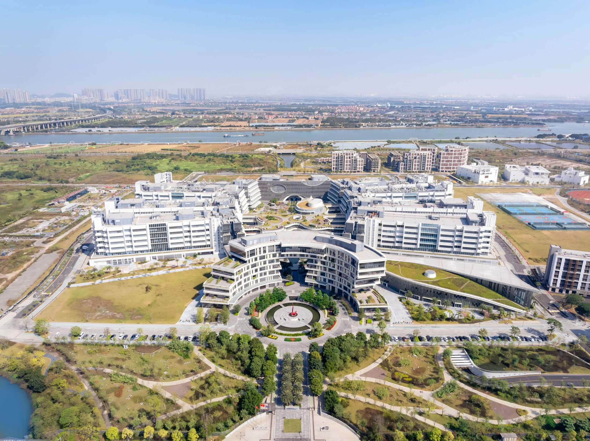

加入我们Join us
围绕共同的问题展开交流。Talk with us about questions we share.
研究交流Research enquiries
如果你对大模型、智能体、金融计量或经济决策感兴趣，欢迎通过公开邮箱介绍你的研究背景与想法。If you work on language models, agents, financial econometrics, or economic decision-making, write to us with a brief introduction to your background and research interests.
负责人Principal investigator张光Guang Zhang研究交流Research enquiriesguangzhang@hkust-gz.edu.cn办公室Office
发送邮件Email us 香港科技大学（广州） · W1 L5 509HKUST(GZ) · W1 L5 509
想一起研究？Interested in working together?
请在来信中说明你的研究方向、经历，以及希望继续追问的问题；如有代表作或项目链接，也欢迎一并附上。Tell us about your research interests, experience, and the questions you would like to pursue. Links to representative work or projects are welcome.
- 大模型：学习与推理Learning & reasoning
- 智能体：协作与决策Agents & decisions
- 金融：数据与模型Markets & models
招生与招聘信息以学校和负责人后续发布为准。Admissions and openings follow later announcements from the university and the PI.
HKUST(GZ) website